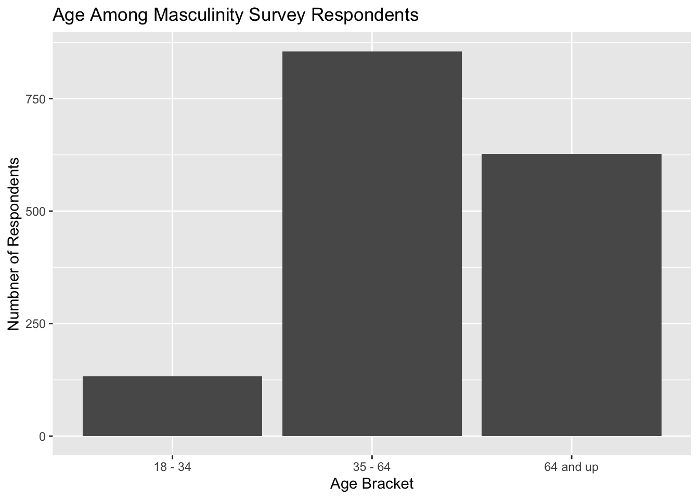

tibble [1,615 × 27] (S3: tbl_df/tbl/data.frame)
$ StudyID : num [1:1615] 1 2 3 4 5 6 7 8 9 10 ...
$ FeelingMasculine : chr [1:1615] "Somewhat masculine" "Somewhat masculine" "Very masculine" "Very masculine" ...
$ PerceiveMasculine: chr [1:1615] "Somewhat important" "Somewhat important" "Not too important" "Not too important" ...
$ FatherModel : chr [1:1615] "Not selected" "Father or father figure(s)" "Father or father figure(s)" "Father or father figure(s)" ...
$ MotherModel : chr [1:1615] "Not selected" "Not selected" "Not selected" "Mother or mother figure(s)" ...
$ OtherFamily : chr [1:1615] "Not selected" "Not selected" "Not selected" "Other family members" ...
$ PopCulture : chr [1:1615] "Pop culture" "Not selected" "Not selected" "Not selected" ...
$ Friends : chr [1:1615] "Not selected" "Not selected" "Not selected" "Not selected" ...
$ SocietyPressure : chr [1:1615] "Yes" "Yes" "No" "No" ...
$ Employment : chr [1:1615] "Not employed, NOT looking for work" "Not employed-retired" "Employed, working full-time" "Not employed-retired" ...
$ MaritalStatus : chr [1:1615] "Never married" "Widowed" "Married" "Married" ...
$ KidUnder18 : chr [1:1615] "Not selected" "Not selected" "Not selected" "Not selected" ...
$ KidOver18 : chr [1:1615] "Not selected" "Yes, one or more children 18 or older" "Yes, one or more children 18 or older" "Yes, one or more children 18 or older" ...
$ NoKids : chr [1:1615] "No children" "Not selected" "Not selected" "Not selected" ...
$ KidsGeneral : chr [1:1615] "No children" "Has children" "Has children" "Has children" ...
$ SexualOrient : chr [1:1615] "Gay" "Straight" "Straight" "No answer" ...
$ Age : chr [1:1615] "35 - 64" "65 and up" "35 - 64" "65 and up" ...
$ Race : chr [1:1615] "Hispanic" "White" "White" "White" ...
$ School : chr [1:1615] "College graduate" "Some college" "College graduate" "Some college" ...
$ Income : chr [1:1615] "$0-$9,999" "$50,000-$74,999" "$50,000-$74,999" "$50,000-$74,999" ...
$ MaritalStatus_cat: Factor w/ 6 levels "Divorced","Married",..: 3 6 2 2 3 2 3 2 2 2 ...
$ KidsGeneral_cat : Factor w/ 2 levels "Has Children",..: 2 1 1 1 2 1 1 2 1 2 ...
$ SexualOrient_cat : Factor w/ 5 levels "Bisexual","Gay",..: 2 5 5 3 5 5 2 5 5 5 ...
$ Age_cat : Factor w/ 3 levels "18 - 34","35 - 64",..: 2 3 2 3 2 3 1 3 2 2 ...
$ Race_cat : Factor w/ 5 levels "Asian","Black",..: 3 5 5 5 5 5 4 5 3 5 ...
$ School_cat : Factor w/ 6 levels "Associate's degree",..: 2 6 2 6 2 5 5 2 6 5 ...
$ Income_cat : Factor w/ 11 levels "$0-$9.9k","$10k - $24.9k",..: 1 9 9 9 9 7 8 5 3 5 ...Final Project: Masculinity Survey
Class: EPI 590R: R Bootcamp
Student: Anna Tramposch
This data set contains the results of a survey of 1,615 adult men conducted by SurveyMonkey in partnership with FiveThirtyEight and WNYC Studios from May 10-22, 2018. The modeled error estimate for this survey is plus or minus 2.5 percentage points. The percentages have been weighted for age, race, education, and geography using the Census Bureau’s American Community Survey to reflect the demographic composition of the United States age 18 and over. Crosstabs with less than 100 respondents have been left blank because responses would not be statistically significant.
Table One
Characteristic |
N = 1,615 1 |
|---|---|
| How Masculine I Feel | |
| No answer | 14 (0.9%) |
| Not at all masculine | 32 (2.0%) |
| Not very masculine | 131 (8.1%) |
| Somewhat masculine | 826 (51%) |
| Very masculine | 612 (38%) |
| How Important Others See Me as Masculine | |
| No answer | 9 (0.6%) |
| Not at all important | 240 (15%) |
| Not too important | 541 (33%) |
| Somewhat important | 628 (39%) |
| Very important | 197 (12%) |
| Does Society Put Unhealthy Pressure On Men | |
| No | 647 (40%) |
| No answer | 13 (0.8%) |
| Yes | 955 (59%) |
| Marital Status | |
| Divorced | 218 (13%) |
| Married | 996 (62%) |
| Never married | 286 (18%) |
| No answer | 8 (0.5%) |
| Separated | 25 (1.5%) |
| Widowed | 82 (5.1%) |
| Kids Status | |
| Has Children | 1,065 (66%) |
| No Children | 541 (34%) |
| Unknown | 9 |
| Sexual Orientation | |
| Bisexual | 52 (3.2%) |
| Gay | 111 (6.9%) |
| No answer | 13 (0.8%) |
| Other | 31 (1.9%) |
| Straight | 1,408 (87%) |
| Age | |
| 18 - 34 | 133 (8.2%) |
| 35 - 64 | 855 (53%) |
| 64 and up | 627 (39%) |
| Race | |
| Asian | 36 (2.2%) |
| Black | 72 (4.5%) |
| Hispanic | 71 (4.4%) |
| Other | 85 (5.3%) |
| White | 1,351 (84%) |
| Education | |
| Associate's degree | 148 (9.2%) |
| College graudate | 515 (32%) |
| Did not complete high school | 21 (1.3%) |
| High school or G.E.D | 157 (9.7%) |
| Post graduate degree | 482 (30%) |
| Some college | 292 (18%) |
| Income | |
| $0-$9.9k | 69 (4.3%) |
| $10k - $24.9k | 112 (6.9%) |
| $100k - 124.9k | 169 (10%) |
| $125k - $149.9k | 89 (5.5%) |
| $150k - $174.9k | 64 (4.0%) |
| $175k - $199.9k | 40 (2.5%) |
| $200k plus | 127 (7.9%) |
| $25k - $49.9k | 239 (15%) |
| $50k - $74.9k | 268 (17%) |
| $75k - $99.9k | 225 (14%) |
| No answer | 211 (13%) |
| Unknown | 2 |
| 1
n (%) |
|
Table 1 shows there were 612 (38%) of 1615 study respondents who reported feeling “Very Masculine”
Regression Table
Outcome |
N |
Beta |
95% CI 1 |
p-value |
|---|---|---|---|---|
| MaritalStatus_cat | 1,615 | |||
| No answer | — | — | ||
| Not at all masculine | -0.15 | |||
| Not very masculine | -0.35 | |||
| Somewhat masculine | -0.44 | |||
| Very masculine | -0.41 | |||
| KidsGeneral_cat | 1,606 | |||
| No answer | — | — | ||
| Not at all masculine | 0.24 | |||
| Not very masculine | 0.17 | |||
| Somewhat masculine | 0.04 | |||
| Very masculine | -0.02 | |||
| SexualOrient_cat | 1,615 | |||
| No answer | — | — | ||
| Not at all masculine | -0.67 | |||
| Not very masculine | -0.26 | |||
| Somewhat masculine | -0.04 | |||
| Very masculine | 0.11 | |||
| Age_cat | 1,615 | |||
| No answer | — | — | ||
| Not at all masculine | -0.33 | |||
| Not very masculine | -0.12 | |||
| Somewhat masculine | -0.05 | |||
| Very masculine | -0.03 | |||
| Race_cat | 1,615 | |||
| No answer | — | — | ||
| Not at all masculine | -0.36 | |||
| Not very masculine | -0.11 | |||
| Somewhat masculine | 0.05 | |||
| Very masculine | -0.04 | |||
| School_cat | 1,615 | |||
| No answer | — | — | ||
| Not at all masculine | -0.57 | |||
| Not very masculine | -0.19 | |||
| Somewhat masculine | -0.29 | |||
| Very masculine | -0.42 | |||
| Income_cat | 1,613 | |||
| No answer | — | — | ||
| Not at all masculine | -1.0 | |||
| Not very masculine | -1.5 | |||
| Somewhat masculine | -0.77 | |||
| Very masculine | -0.49 | |||
| 1
CI = Confidence Interval |
||||
Figure 1

Figure 1 shows that of 1615 participants in the study, 133 reported they were between 18 and 34 years of age.
Create a Function
Level Frequency
1 $0-$9.9k 69
2 $10k - $24.9k 112
3 $100k - 124.9k 169
4 $125k - $149.9k 89
5 $150k - $174.9k 64
6 $175k - $199.9k 40
7 $200k plus 127
8 $25k - $49.9k 239
9 $50k - $74.9k 268
10 $75k - $99.9k 225
11 No answer 211